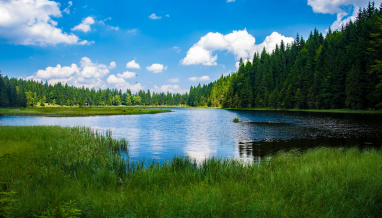

Couples Resort
Activities
Whether you’re immersing yourself in a scenic hike along the many trails in Algonquin Park, enjoying a relaxing afternoon swim in our heated pool, or going cross-country snowshoeing in the winter, Couples Resort has endless activities for you and your loved one to enjoy. Regardless of the weather or the season, we can guarantee you’ll never be bored during your stay.
Explore the seasons at Couples Resort
Spring
Spring is in the air and life in Nature is coming alive with excitement here at Algonquin Park, a perfect time to take a romantic vacation at Couples Resort and visit Algonquin Park.
View Spring PackageSummer
To do a lot or do nothing at all? A tough decision when almost everything is included in one package. Then again, who said you couldn't just relax in a deep padded chaise lounge on your own room deck and indulge in a favorite novel while resting in the soothing warmth of the day.
View Summer PackageFall
Nothing says FALL more than fall colors in Algonquin Park, which is known to have some of the most brilliant changes of season throughout Ontario. Considered a Signature Canadian Experience bringing visitors from around the world, who are attracted by the outstanding fall colour viewing opportunities, but there are many other things to see and do.
View Fall PackageWinter
Winter is magically romantic with a crackling wood fire, a glass of champagne and your own bubbling Whirlpool Bath Tub and private rejuvenating Hot Tub, in-room real crackling wood fireplace and with romantic 1st Class gourmet dining.
View Winter PackageIn-Resort Activities
In-Resort Activities at Couples Resort
Couples Resort proudly hosts a variety of activities and attractions to keep you entertained during your stay, within walking distance from your accommodations. Experience an action-packed vacation without ever needing to leave the resort grounds.
Hover for more information.
Couples Resort Hiking Trail
On-site scenic hiking trails, leading to a scenic view of Algonquin Park, consisting of three loops, Lookout Trail 1.0 km in length, Bear trail loop 2.7 and Rail Line loop 1.2.
Couples Resort Sport Centre
Get competitive at our in-house regulation-size pickleball, tennis, badminton, and basketball courts with all racquets, balls, and birdies provided.
Bike Rentals
The Couples Resort offers Mountain bike rentals as well as bike maps for four trails. Each of the trails are rated easy for all to enjoy. Ride along brand new Bike Path alongside Highway 60, over rolling hills and along lakes.
Lake
To invigorate the body, a wonderful long swim off of our swimming dock in our clean lake is a must. The Galeairy Lake is clean and safe, with water temperatures hitting 25C (78F) by the end of July.
Motor, Paddle, & Row Boats
Enjoy a free leisurely tour along the shores of Galeairy Lake and take in the beauty of Algonquin. Take the 4 hour paddle round trip and explore our waterfall, or spend few hours fishing.
Kayaks & Canoes
An important form of transportation for the Algonquin natives has always been the use of canoes on the beautiful lakes and rivers. Canoes and kayaks permit you to travel deep into Algonquin Park on our Galeairy Lake.
Patios
Relax at one of our three self-service patios by the pool, double fire-pit, or couples chaise lounge, OR enjoy a sit-down meal and be waited on by friendly servers at our service patio overlooking the Galeairy Lake.
Heated Pool
1 outdoor salt-water pool 20 feet X 40 feet - Open May Long Weekend until Labour Day Weekend
Pool Temp 82'F & 28'C hours 10am to 7pm.
Nearby Attractions
Algonquin Park
Algonquin Park, the first provincial park in Ontario, protected from the noise and rush of civilization, this world-renowned park in Ontario is a sanctuary for the rugged beauty of the maple, pine, moose, and wolves. A Provincial Park since 1893, the 7500 square kilometers (3500 square miles) of Algonquin Park are home to a diverse and unblemished eco-system that can be found nowhere else on earth.
Glaciers that receded ten thousand years ago created the distinctive rock outcroppings and spring-fed lakes of Algonquin. These mountains of ice have left the park with a rough, stark beauty. This, combined with its location, 3 hours northeast of Toronto and 2 1/2 hours west of Ottawa makes Algonquin an ideal attraction for those looking to escape the hustle of the city.
This majestic park, minutes away and seen from our lakeshore, is awe-inspiring and completely peaceful with the incredible beauty of nature. Come experience the Algonquin grandeur, with all its fresh clean air, deep blue skies, rich green forests and hundreds of pristine lakes.
Park Activities
- 17 Hiking trails from casual to ambitious
- Canoeing from paddle to portage
- Wildlife spotting from loon to moose
- Visitor Centre information and activities
- Art Centre and Logging Museum
- Algonquin Art Gallery
- Fishing
- Algonquin Adventure Tours
Galeairy Lake
Couples resort is located on the shores of Galeairy Lake, with direct access to Algonquin Park. Originally named Long lake which was renamed to Galeairy Lake because the lake borders Nightengale and Airy townships.
Galeairy Lake is 11 kilometres (7 miles) long, land locked and extends mostly inside the boundaries of Algonquin Park . Explore the many secluded coves by canoe or kayak and search for loons, beaver, otter and moose. Pull up on shore, have a picnic and go for a swim.
Swimming in this lake is great. It is very clean and safe, with water temperatures hitting 25C (78F) by the end of July. Typically the lake temperature is above 18C (70F) from the third week of June to the first week of September.
Winter Exclusives
Hover for more information
Winter Birding
Famous birds that will eat seeds from your hand or your hat are the Canada Jay (aka the Gray Jay or the Whisky Jack) and Boreal Chickadee.
Cross Country Skiing & Snowshoeing
48 kilometres of groomed and 23 kilometres of non-groomed cross-country ski trails available in three low-usage trail networks, typically December to early April.
Ice Skating
Enjoy the authentic Canadian experience of skating outdoors just a short distance away from the resort In Algonquin Park at Mew Lake Campground, or at the Township Rink, a short 15 minute walk into town.
Ice Hiking
Fun and Easy and Safe. Invented Here in 2018. IceHiking is a Guaranteed Winter Sport, We guarantee it daily - 7 days a week, All Winter long, November to April. All Algonquin Park trails now easy to access in Winter!
Equipment Rentals
- Free Algonquin Park Pass included with your stay.
- Pro IceHiking Crampons and Walking Poles
- Bird seeds
- Wax-less cross-country skis, boots and poles.
- Ski waxing station.
- Pro snowshoes
- Ice Skates up to size 14
- Mew Lake Park Pass from our Office